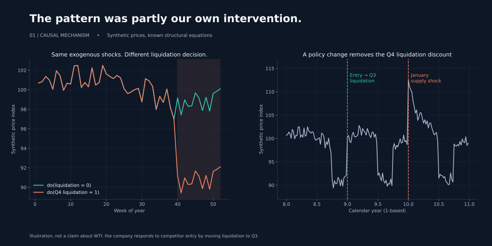
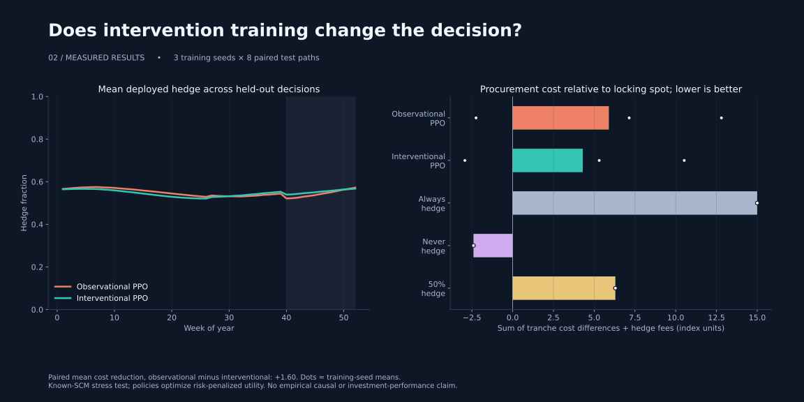
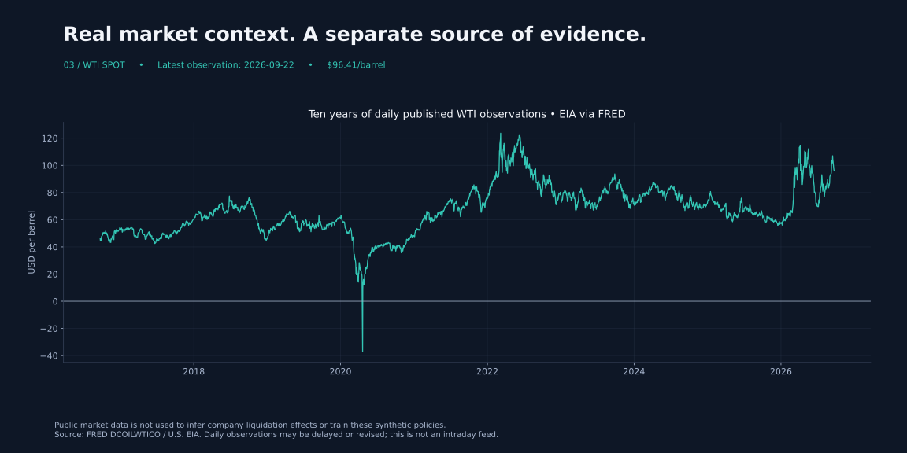

CAUSAL AI / REPRODUCIBLE EXPERIMENTWhen the pattern you learn
is the policy you used.
A Transformer sees a Q4 discount. But part of that discount comes from the company’s own liquidation schedule. Change that schedule, and the decision problem changes with it.
104 weekly observationsTransformer + corrected PPOExplicit do-interventions
01 · Intervene on the mechanism
The simulator separates an exogenous seasonal component, random disturbances, liquidation and a supply shock. Paired worlds keep the disturbances fixed and replace the liquidation equation.

02 · Evaluate the policies on the same worlds
Training uses years 1–8, with a two-year input warmup. Years 9–10 are held out. Both policies face the same test paths, including the changed liquidation schedule and an unseen January supply shock. Baselines make the comparison interpretable.

Measured paired cost reduction (observational minus interventional): +1.60 index units. Positive values favor interventional training; see all seeds in results/metrics.json.
Under-hedging means a sampled hedge below 50%. The saved CSV reports its exact categorical probability; deployment uses the probability-weighted mean hedge. No 94% result is assumed.
03 · Keep real data and causal assumptions distinct
Free WTI spot observations provide market context. Refresh with causal-hedging fetch. Public prices alone do not identify your company’s liquidation effect.

FRED / EIA source and updates
What this demonstrates
Policy-dependent patterns can fail under a regime shift. A known structural model lets us ask explicit intervention questions and test a different training distribution. Whether that produces a better hedge is an empirical result of this experiment—not a guarantee of causal RL.
This is a synthetic procurement demo. It does not model owned-inventory P&L, futures basis, margin or market impact from the hedge itself. The causal agent is given the correct simulator; it does not discover the SCM from WTI prices.